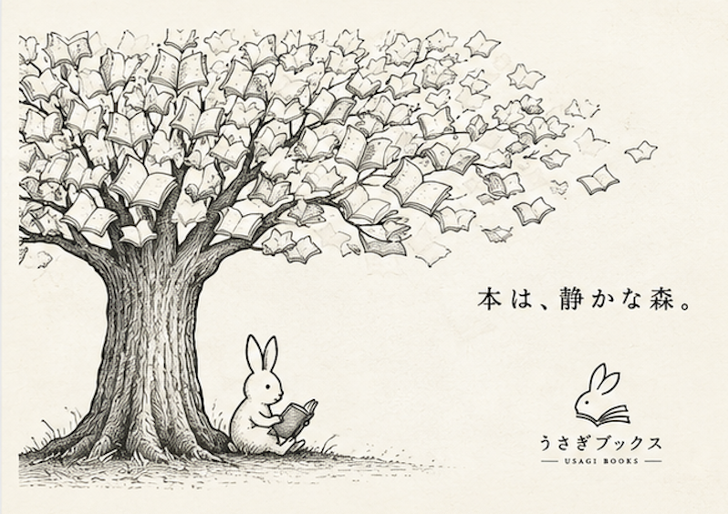
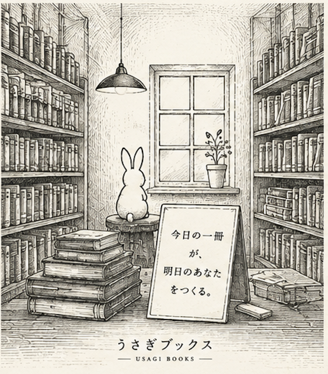

プロトタイプや原稿がほぼ完成した状態で公開し、リターン（モノ）と引き換えに支援を募る。
著者は目次や完成原稿がなくても、書きたい理由や着想を最初に共有する。読者はそこに共感して支援する。

著者は目次や原稿ではなく、自分を突き動かす着想と執筆理由を共有する。
支援者は資金だけでなく、コメントや取材協力といった形でも参加できる。
執筆の進捗が可視化され、支援者は本が育つ過程そのものを体験する。
うさぎブックスは選書をしません。ここで紹介する3冊は、社外の目利きが個人の視点で選んだものです。
レシピではなく手つきに宿るものを追って、消えていく台所の記憶を一冊にする。
